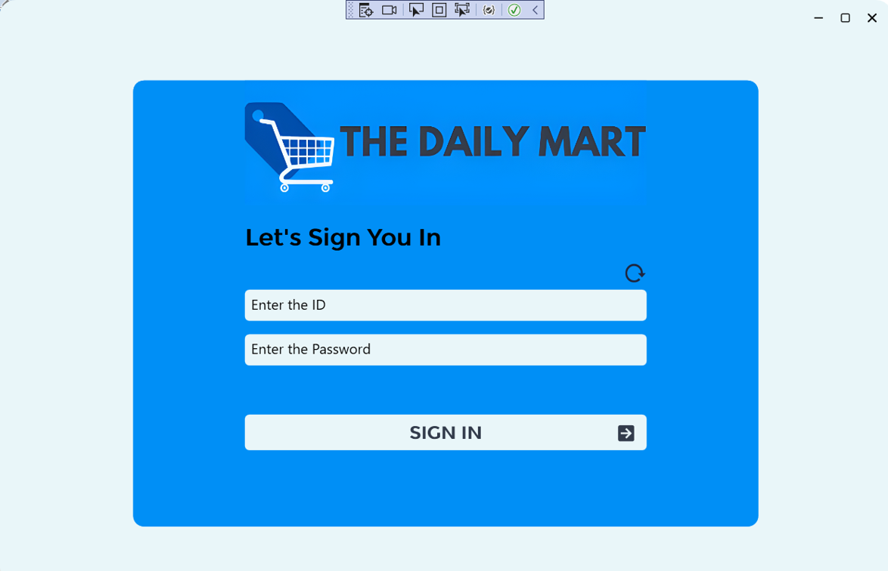

Desktop Development Projects

Point of Sale (POS) Application
For my latest project, I developed a comprehensive Point of Sale (POS) application using WPF (Windows Presentation Foundation) and C# programming language, integrated with Microsoft SQL Server for database management. This application aimed to provide a robust solution for managing sales, inventory, and customer transactions in retail environments.
Key Features:
- Product Management: Implemented features for adding, updating, and deleting products from the inventory database, along with functionalities for setting product categories, prices, and quantities.
- Sales Management: Developed a user-friendly interface for processing sales transactions, including options for adding products to the cart, applying discounts, and generating invoices.
- Inventory Tracking: Integrated inventory management capabilities to track product stock levels in real-time, with alerts for low stock items and automated reordering functionalities.
- Customer Management: Implemented a customer database module to store and manage customer information, enabling features such as loyalty programs, customer rewards, and personalized discounts.
- Reporting and Analytics: Designed reporting tools to generate comprehensive sales reports, transaction summaries, and inventory analysis, providing insights into business performance and trends.
- User Authentication and Authorization: Implemented secure login mechanisms with role-based access control (RBAC) to ensure data integrity and protect sensitive information.
Technologies Used:
- WPF (Windows Presentation Foundation)
- C# Programming Language
- Microsoft SQL Server (MSSQL)
- Entity Framework for ORM (Object-Relational Mapping)
- XAML (eXtensible Application Markup Language)
- LINQ (Language Integrated Query)
Challenges Faced:
- Complex UI Design: Designing and implementing a user-friendly and intuitive interface with rich functionality posed challenges in terms of layout, navigation, and responsiveness.
- Data Management: Efficiently managing large volumes of transactional data and maintaining data consistency across different modules required careful database schema design and optimization.
- Performance Optimization: Optimizing application performance, especially during data retrieval and processing, to ensure smooth operation and responsiveness even under heavy usage.
- Security Considerations: Addressing security vulnerabilities such as SQL injection, data breaches, and unauthorized access by implementing robust authentication and authorization mechanisms.
Achievements:
- Successful Deployment: Successfully deployed the POS application in retail environments, receiving positive feedback from users and stakeholders for its reliability, efficiency, and user-friendly interface.
- Increased Operational Efficiency: The implementation of the POS system led to significant improvements in operational efficiency, streamlined business processes, and enhanced customer service.
- Business Growth: The adoption of the POS application contributed to increased sales revenue, improved inventory management, and better decision-making capabilities, fostering business growth and expansion.
The development of the POS application was a rewarding experience that allowed me to demonstrate my expertise in desktop application development, database management, and software engineering principles. It stands as a testament to my commitment to delivering innovative solutions that address real-world business challenges and drive positive outcomes.